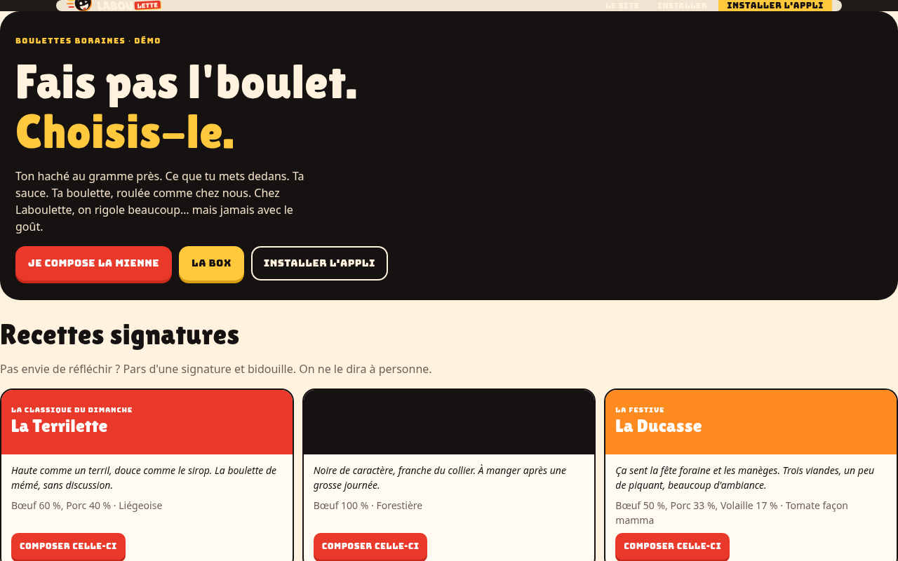
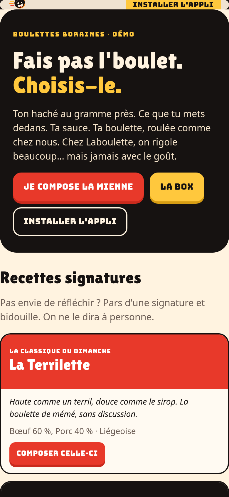

Résumé
Laboulette est une marque de boulettes boraines personnalisables. Le client compose sa boulette dans une appli : haché dosé au gramme, garnitures, herbes, épices, puis une sauce dans une carte courte. L'atelier roule chaque boulette à la main au calibre traditionnel de 120 g crus, la cuit au four, la refroidit, la met sous vide et l'emballe dans une boîte en carton.
Le lancement se fait en solo, dans un petit atelier du Borinage, en livraison locale et click-and-collect. L'offre s'étend ensuite à une Box (repas ou abonnement), à une offre pro, puis à la vente en magasin via une grande enseigne exclusive, encore à trouver.
Fourchettes de recherche du 18/11/2026, hors salaire du fondateur. Détail en section 10.
- Valider recettes, poids cuit et durée de conservation
- Fixer le statut AFSCA avant d'aménager
- Tester la demande en local avant la grande distribution
Problème et opportunité
Le plat qu'on aime, en version figée
Les boulettes toutes faites sont vendues en recette unique : même haché, même sauce pour tout le monde. Ceux qui veulent moins de porc, sans œuf ou plus épicé n'ont pas le choix. Hypothèse à confirmer par une enquête clients.
Le fait-maison prend du temps
Rouler 120 g à la main, cuire, faire la sauce : c'est une soirée. Les Belges achètent de plus en plus de plats et de préparations de viande prêts à consommer (voir marché).
Une identité boraine forte
Terrils, gaillettes, ducasses : un terroir qui parle aux gens du coin et intrigue les autres. Aucune marque de boulettes boraines personnalisables n'a été identifiée. À étudier : recherche d'antériorité et de concurrents directs.
Concept et produit
La fiche produit
| Calibre | Unique, 120 g crus, farce comprise. Poids cuit Hypothèse environ 95 à 110 g (10 à 20 % de perte), à peser en vrai. |
|---|---|
| Haché | Dosé au gramme : balance 1 g, mélangeur mécanique, doseuse contrôlée à la pesée. |
| Cuisson | Au four, cible 70 °C à cœur pendant 2 minutes, à valider et enregistrer. |
| Sauces | Carte courte, préparées en marmites : Liégeoise, tomate, moutarde, forestière, Brabançonne (carte de travail). |
| Emballage | Sachet sous vide dans une boîte en carton imprimée. |
| Frais ou surgelé | C'est l'entreprise qui décide, pas le client. Frais : DLC courte de 4 jours maximum tant qu'aucune étude de conservation n'est faite. |
| Producteur local | Option payante, tarif à définir. Aucun producteur n'est choisi. |
Les six signatures
Recettes de démonstration présentées sur le site. Compositions, allergènes et conservation à valider en production.
Les offres


L'appli pour composer sa boulette
Appli installable (PWA) qui marche hors ligne. On y compose sa boulette de A à Z, en particulier ou en pro, on l'enregistre, on la partage par lien et on imprime sa fiche. Pas de prix ni de paiement : c'est une démo.
Ouvrir l'appli L'installerClientèle cible
Les familles du coin
Veulent un plat qui plaît à tout le monde, avec une variante sans œuf ou moins épicée pour les petits.
Les actifs pressés
Une à deux personnes, peu de temps le soir. Le format sous vide à réchauffer et la Box leur parlent.
Les pros de bouche
Friteries, brasseries, cantines, traiteurs : grands formats et sauce à part.
Les nostalgiques
Borains partis ailleurs ou amateurs de terroir, sensibles au récit et à l'option producteur local.
Hypothèse Ces profils viennent de l'atelier produit. Leur taille et leur volonté de payer ne sont pas mesurées : À étudier par enquête et prévente test.
Canaux
Livraison
Locale, en caisses isothermes au départ, puis en utilitaire frigorifique.
Dès le lancementClick-and-collect
Commande dans l'appli, retrait à l'atelier ou en point relais.
Dès le lancementEn magasin
Via une grande enseigne exclusive, en SKU fixes (signatures, calibre unique). Enseigne non choisie.
Après agrément et volumeMarché et concurrence
Uniquement des chiffres publiés, avec leur source et leur date. Rien ici ne mesure le marché de la boulette en particulier.
de viande et volaille fraîches ou surgelées achetées pour la maison, par habitant, en Belgique en 2025.
VLAM, d'après le panel YouGov de 6 000 ménages, rapport publié en mai 2026dépensés en viande et volaille pour la consommation à domicile en 2025, au prix moyen de 11,84 €/kg (+4 %).
VLAM, mai 2026des ménages belges sont composés d'une personne au 1er janvier 2025 (37,7 % en Wallonie). Taille moyenne : 2,25 personnes.
Statbel, 12 juin 2025Plats et préparations de viande : ça monte
Consommation à domicile, kg par personne et par an (Belgique)
VLAM / YouGov, cités par Terre Fermière (2024) et rapport VLAM 2025 (mai 2026). Le VLAM note en 2025 que les préparations et plats cuisinés à base de viande continuent de progresser, et que le haché gagne en popularité.Ce qu'on sait d'autre
- Le boulet est un plat populaire reconnu par la fiche « Le boulet à la liégeoise » de Patrimoine vivant Wallonie-Bruxelles, qui donne aussi le poids traditionnel d'environ 120 g par boulet.
- Environ trois quarts de la consommation de viande se fait à domicile, le reste hors foyer, en take-away ou en livraison (VLAM, Consumptietracker, 2025).
- La consommation apparente de viande était de 79,6 kg équivalent carcasse par habitant en 2023, en baisse de 1,5 % (Statbel, 11 juin 2024).
- Selon des distributeurs interrogés par Gondola (fin 2024), le rayon des plats préparés progresse en valeur et en volume, porté par les petits ménages.
Concurrence : les familles d'acteurs
À étudier : taille du marché belge de la boulette et des plats préparés en valeur, part de la Wallonie et du Hainaut, prix pratiqués par les concurrents, panier moyen des box repas, existence d'une offre de boulettes personnalisables. Aucun de ces chiffres n'a été trouvé dans une source publique fiable pendant cette recherche.
Sources de cette section
- VLAM, Vlees & gevogelteverbruik in België in 2025, mai 2026
- Terre Fermière, Hausse de la consommation à domicile de viande en 2024
- Statbel, Belgium had 36% one-person households on 01 January 2025, 12 juin 2025
- Statbel, Bilans d'approvisionnement, 11 juin 2024
- Gondola, Les plats préparés (et les retailers) sont prêts pour 2025
- Patrimoine vivant Wallonie-Bruxelles, Le boulet à la liégeoise
Production
Un opérateur seul, en marche en avant : zone crue d'un côté, zone cuite de l'autre. Les points critiques (CCP) sont en rouge.
Lot type
8 à 12 kg de farce, soit 65 à 100 boulettes de 120 g, plus les sauces du jour.
Four 6 niveaux
Hypothèse 16 à 24 boulettes par plaque GN 1/1, soit 96 à 144 boulettes par fournée.
Dosage au gramme
La balance fait foi. La doseuse accélère, mais on contrôle les 3 premières puis 1 sur 10. Tolérance interne Hypothèse 2 à 3 g.
Semaine type en solo
Planning indicatif, tiré du dossier production. Il suppose une DLC courte : dès que le standard passe en surgelé ou qu'une étude valide une DLC plus longue, la production peut se grouper sur deux jours.
Réglementation AFSCA / HACCP
Cible de cuisson retenue, plus prudente que le plancher de 60 °C des préparations chaudes, surtout si le haché contient de la volaille.
Refroidissement rapide (CCP 7 du guide G-044, fiche AFSCA « Températures »).
Solution acceptable pour le frais selon le G-044. Toute DLC plus longue, ou une DDM en surgelé, demande une étude de durée de vie.
Vendre à une enseigne, ce qui sort du B2C pur, relève en principe de l'agrément pour produits à base de viande, avec marque d'identification.
Vente directe
Livraison et click-and-collect : enregistrement ou autorisation AFSCA, plus un système d'autocontrôle (guide G-044). Les assouplissements HACCP couvrent le B2B jusqu'à 30 % du chiffre d'affaires dans un rayon de 80 km.
À faire avant d'aménager
- Faire confirmer le statut exact par l'AFSCA (fiche d'activité)
- Étiquetage : allergènes, lot, DLC, poids net cuit
- Sacs sous vide barrière, contact alimentaire
- Analyses microbiologiques, dont Listeria
Aucune certification (IFS, halal, bio ou autre) n'est obtenue ni revendiquée. Ce résumé n'est pas un avis juridique.
Équipe
Florent Dramaix, fondateur
Porte le projet et fait tout lui-même au départ : production, vente, livraison. Il a défini le concept, le process et l'appli.
Autour de lui
- Comptable et conseil juridique (création de SRL) : à choisir
- Laboratoire pour les analyses et la DLC : à choisir
- Studio web si le configurateur sur mesure est retenu
- Premier renfort en production quand le roulage à la main bloque
Hypothèse Le moment du premier recrutement dépend du volume. Il n'est pas chiffré dans le budget.
Budget de lancement
Fourchettes en euros HTVA, issues de la recherche du 18 novembre 2026 : tarifs publics et fiches produits, sinon estimations. Recalculé pour un calibre de 120 g au lieu des 90 g de la première version.
Préparation IFS : total haut porté à environ 129 000 – 307 000 €. Le référencement en enseigne n'a pas de tarif public belge : une réserve commerciale de 5 000 à 20 000 € est une estimation non sourcée.
Salaire et cotisations du fondateur, loyer après le 3e mois, énergie, TVA, stock au-delà du premier mois, formeuse (option future), frais de référencement. Aides wallonnes possibles (prime à l'investissement à partir de 100 000 €, prêt de Wallonie Entreprendre) non déduites.
Ce qui change avec 120 g
| Ligne | Version 90 g | Version 120 g | Statut |
|---|---|---|---|
| Farce par mois, bas (2 000 boulettes) | 180 kg | 240 kg crus | Recalculé |
| Farce par mois, haut (6 000 boulettes) | 540 kg | 720 kg crus | Recalculé |
| Matière première du 1er mois, bas | 1 000 – 2 000 € | ≈ 1 300 – 2 700 € | Recalculé ×1,33 |
| Matière première du 1er mois, haut | 3 200 – 6 500 € | ≈ 4 300 – 8 700 € | Recalculé ×1,33 |
| Totaux | 31–78 k€ / 122–280 k€ | 31–79 k€ / 123–282 k€ | Recalculé |
| Format des sachets sous vide (200 × 300 mm) | Même nombre de pièces, mais des boulettes plus grosses | À vérifier | |
| Capacité de la cellule de refroidissement et des chambres froides | Environ 33 % de masse en plus à refroidir | À vérifier | |
| Nombre de caisses isothermes | Volume livré plus grand | À vérifier | |
Le recalcul garde la méthode d'origine : coût matière proportionnel au poids, environ 80 % de viande, prix atelier estimés à partir des cotations officielles de novembre 2026. Le nombre de boulettes par mois (2 000 et 6 000) est une Hypothèse de volume.
Simulateur de chiffre d'affaires Exemple illustratif à valider
Aucun prix de vente n'est fixé. Entre un prix hypothétique pour voir l'ordre de grandeur. Ce n'est ni une prévision ni un objectif.
Plan de lancement par jalons
Ordre des étapes, sans date fixée : chaque jalon s'ouvre quand le précédent est validé.
- ✓J0 · Concept et appli
Identité Laboulette, site de démo et appli installable en ligne.
- 1J1 · Recettes et essais 120 g
Figer les signatures et les sauces, peser le poids cuit, tester les allergènes et les liants.
- 2J2 · Société, local, AFSCA
Créer la SRL, trouver le local, faire confirmer le statut AFSCA avant les travaux, assurances.
- 3J3 · Équipement et autocontrôle
Matériel, plan HACCP, premières analyses, étiquettes, emballages.
- 4J4 · Lancement local
Livraison et click-and-collect dans le Borinage, avec un petit nombre de recettes.
- 5J5 · Box et offre pro
Box repas ou abonnement, premiers clients professionnels, étude de durée de vie.
- 6J6 · Test en magasin
Agrément adapté, codes GS1, éventuellement IFS, puis test régional avec une enseigne exclusive.
Risques
Cuisson, refroidissement, Listeria. Parade : CCP suivis et enregistrés, DLC courte tant qu'aucune étude n'est faite.
Impact fortLe roulage à la main plafonne les volumes. Parade : lots standard, renfort, formeuse plus tard.
Impact fortChaque commande sur mesure rallonge la pesée et le nettoyage. Parade : options limitées, regroupement par lots.
Impact moyenExclusivité, conditions commerciales non publiques, besoins de certification. Parade : canaux directs d'abord.
Impact fortLe bœuf et le veau montent (VLAM 2025). Parade : recettes porc-bœuf, revue régulière des prix.
Impact moyenPremier écart du budget : de 9 000 € à plus de 90 000 €. Parade : viser une ancienne boucherie.
Impact moyenProchaines étapes
Lancer une enquête et une prévente test via l'appli pour mesurer la demande et le prix acceptable.
Demander à l'AFSCA de confirmer le statut (vente directe, puis agrément 1.2.1).
Essais en cuisine : poids cuit réel, format des sachets, fiches allergènes des six signatures.
Demander des devis belges pour les gros postes : local, froid, four, cellule.
Fixer le tarif de l'option producteur local et choisir les producteurs.
Étudier le marché : taille, prix concurrents, box repas, puis construire le prévisionnel financier.